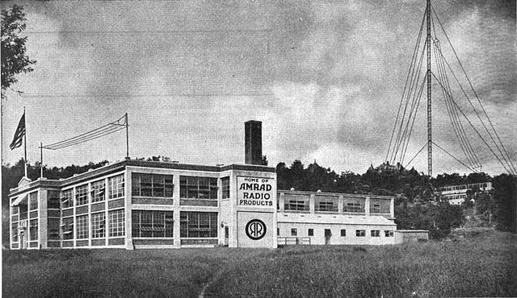
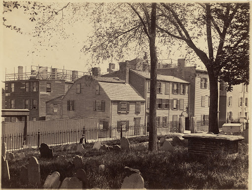
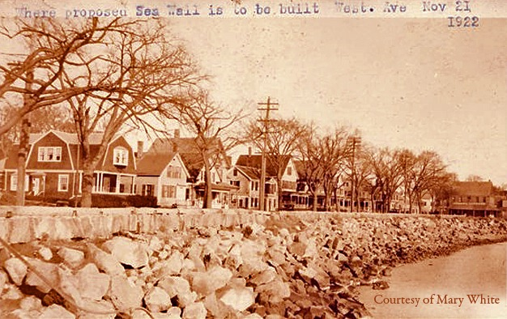
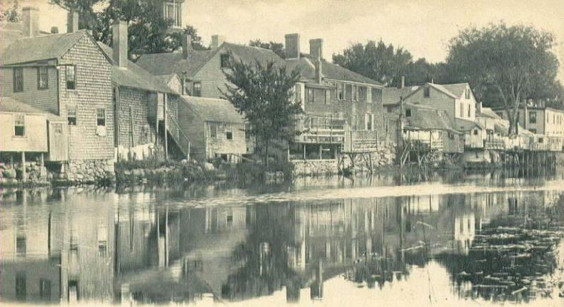
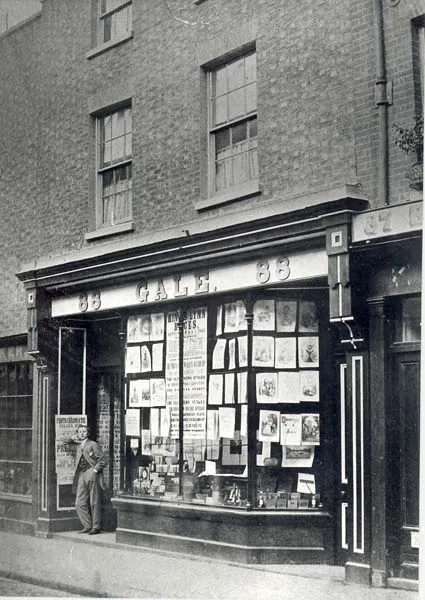
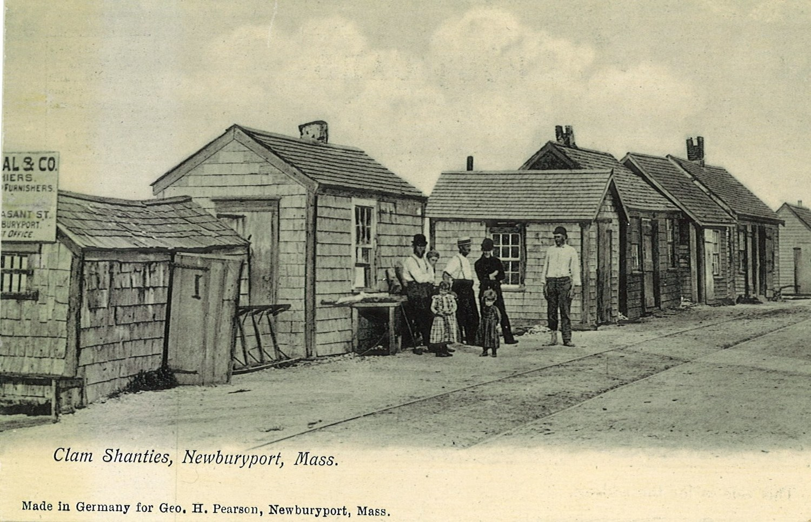
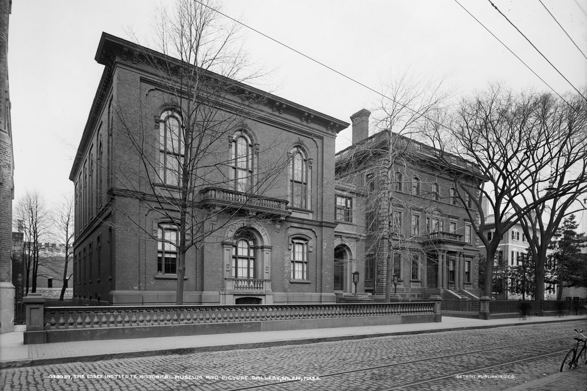

Arkham is one of the pivot place in Lovecraft's work, its a small
town with a huge reputation, mainly for its university, its
historical society, its sanitarium and its dissapearing childrens.
Its university, the Miskatonic University, got quite the
reputation for being a prestigious university axed on history
and having a reserch into the occult program. The Miskatonic
university is where is currently held the affamed Necronomicon.
Its sanitarium on the other hand is affamed for its competence.
Used to deal with dark and unnatural things, when things get to
wild to handle for the others, Arkham sanitarium is the one who
inherits the job. This is also the inspiration for Batman's
Arkham Asylum, which explains why so many criminal have supper
natural abilities.
HP Lovecraft's Bolton is not the one at 12miles of Boston, it is a small and dull industry town with a circus near Ipswitch. While it is name dropped often by Lovecraft, only one of his stories took place there: The rats in the walls.
Unlike Bolton, HP Lovecraft Boston is indeed the capital of Massachaussette. It is used for so many things, specially on Angell and Benefit streets where some of his best know characters lived and worked. Now days, the intersection between Angell and Prospect is HP Lovecraft memerial square and the Shunned House still stands.
Gloucester too is a non-fictional city however it is not as often mentioned than the previous one on this page, it is mainly notable because it is the inspiration for Innsmouth like Salem is the inspiration for Arkham.
Ipswitch is a big town neighboring Innsmouth. The people from the later often go shopping to Ipswitch because their own town is small. The main character of The Shadow Over Innsmouth come from Ipswitch by following the railroad and tries to go back this way by foot. People of Innsmouth often attract the attention of those from Ipswitch, their reclusive life style in their fishing village make them stand out.
This city is actually never referenced by Lovecraft, it was probably simply added to the map to help people situate themselves on it.
Newburyport too is neighboring Innsmouth but the locals are highly supicious, they don't like strangers and might even refuse to talk to them! They also dread Innsmouth! They totaly deforested their city so now the soil is turning into sand but they believe that deforestation has nothing to do with it and that it is in reallity a curse bestowed on them by their weird looking neighbors!
Salem often appears in Lovecraft's work, lot of his things where inspiered by Salem's witch trial. Researching on those trial seem to have been one of Lovecraft passtime, he even managed to find one of the witches descendant and learned some "rituals" that was transmitted to her orally from her!
